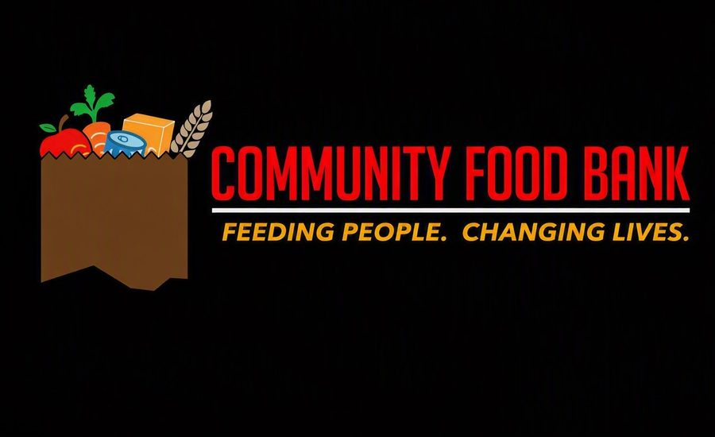

Welcome to Our Community Food Banks
Community Food Banks is a non‑profit organisation dedicated to fighting hunger and improving access to clean water. We were founded on the simple yet powerful belief that no one should be deprived of life's essentials, and that every person deserves the chance to live with dignity, hope, and resilience. Our journey began with a vision to stand alongside communities, not just as providers of aid, but as partners in building a future where families can thrive. We are driven by compassion, integrity, and the conviction that lasting change comes from working hand‑in‑hand with those we serve.
At our core, we are more than an organisation—we are a movement of people united by empathy and a shared responsibility to uplift one another. We believe that hunger and thirst are not just physical struggles, but challenges that affect the spirit, and our mission is to bring relief that nourishes both body and soul. Community Food Banks is committed to creating spaces of hope, where families feel supported, communities grow stronger, and dignity is restored. Every initiative we undertake is guided by the values of collaboration, sustainability, and social justice, ensuring that our impact is not temporary but transformative. Together with volunteers, partners, and supporters, we continue to weave a network of care that reaches across South Africa. Our work is a testament to the power of unity—showing that when communities come together, resilience is built, lives are uplifted, and futures are re‑imagined.

Our Impact in Numbers
- 12,000meals delivered every day at the peak of the lockdown response
- 3months of daily meal delivery across sites in Gauteng
- 2020the year our volunteers started the movement
- 2024the year we launched our Water Project